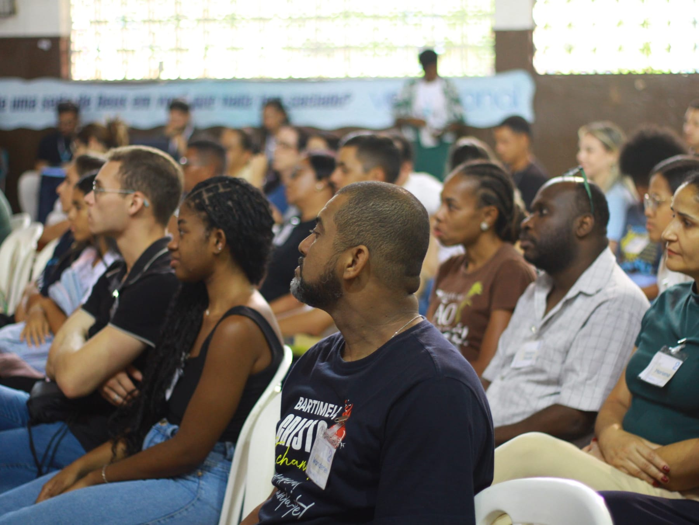
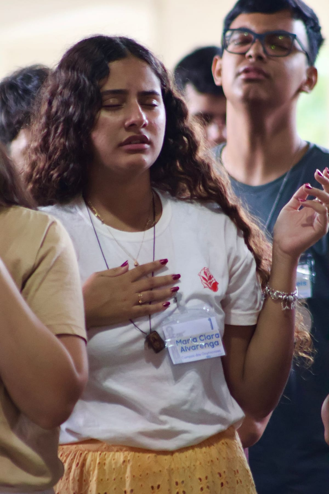
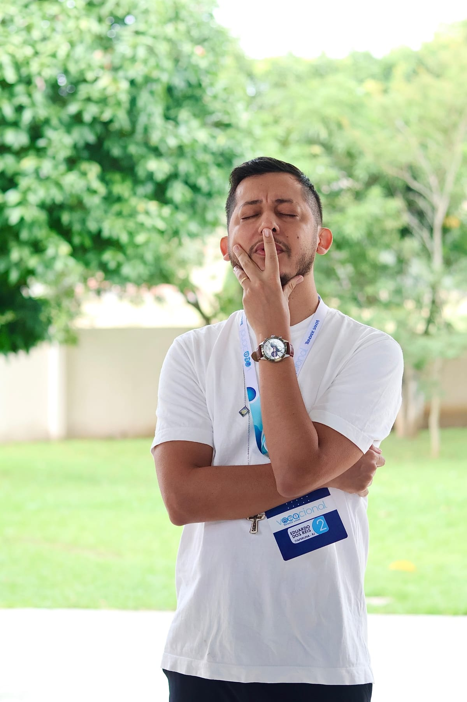
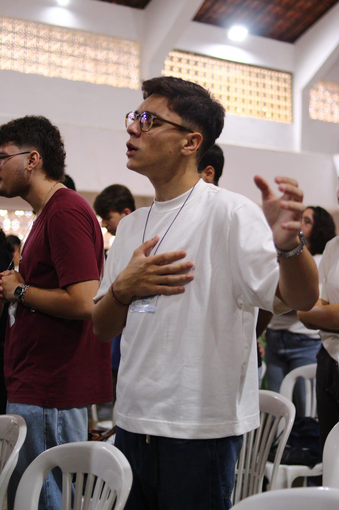

Vocacional TS
Um lugar para a sua vocação

Somente no amor o homem encontra sua verdadeira vocação.
São João Paulo II
O processo vocacional em três passos

Conhecer
Ano do Pai - Namoro
Tempo de descoberta da sua vocação, missão e do Carisma.

Discernir
Ano do Filho - Noivado
Aprofundamento da fé, do chamado. Discernimento e entrega mais profunda.

Doar-se
Ano do Espírito Santo - Casamento
Entrega total, amadurecimento e preparação para receber o Sinal da comunidade.


